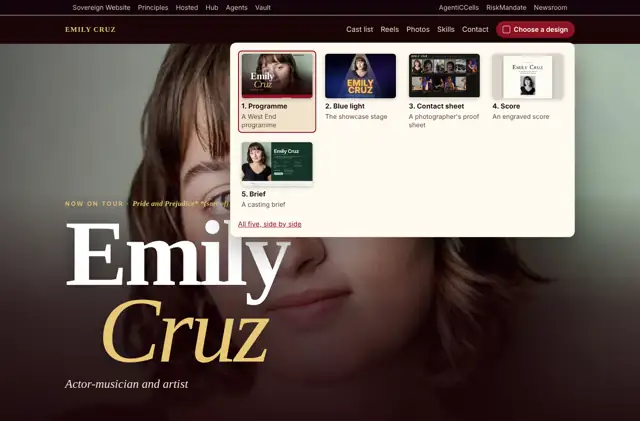
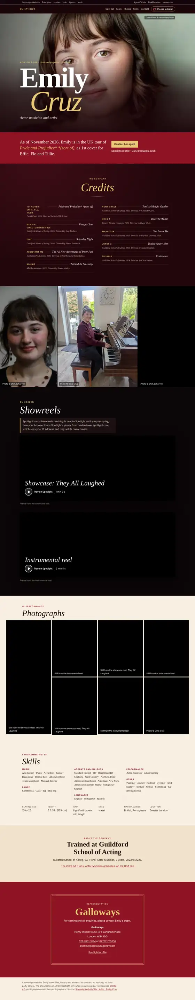
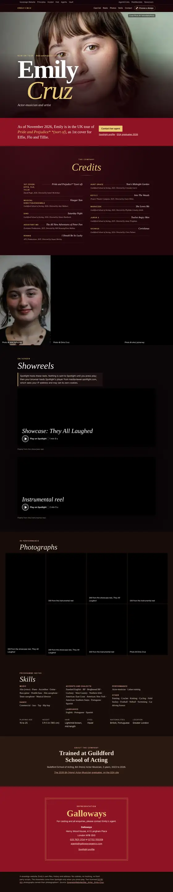

Synthetic users: Emily Cruz, round 3 (first run, invalid)
Site: https://emily-cruz.artist.sovereignweb.site/ (home: Programme). Commit: d5c475f and 99d9f5e. Run: 20 November 2026, about 16:15 UTC, by design.b. Look score: 3.2 (4, 3, 3, 3, 3). This run is invalid: see below.
Each persona is a separate agent given only what a visitor gets: the first phone screen (390 x 844), full-page screenshots at 390 and 1366 px in light and dark, the design chooser opened (from round 7 on), and the page's visible text. It is not given the guidelines or design.b's findings. Method: Synthetic users. These are simulations: they inform a rating, and never replace the measured checks or a real person.
Why it is invalid
The black boxes were design.b's, not the site's. The audit tool took full-page screenshots without scrolling, so the lazy-loaded images below the first screen never loaded. Scrolled through by hand, every image on the page loads; the only images left unloaded were the chooser's five thumbnails, which sit in the closed panel. tools/audit.js now scrolls through every page before a full-page capture, and the run was repeated on corrected screenshots (the valid run). It is published so the mistake is on the record.
Verdicts
Casting director: 4 of 5
Found "Contact her agent" and the agent's details easily. "On the desktop pages the photo and reel areas are big black boxes." "The big gold italic 'Cruz' over the portrait made me say 'oh, nice'."
Low-vision reader: 3 of 5
"In the full-page shots many photos are black boxes... If that happens for real, it looks broken." "The big Emily Cruz name over the portrait is a proper wow. The missing images spoil it."
Phone visitor in a hurry: 3 of 5
"Big black empty boxes in the Photographs and reels sections look broken or unloaded." Nearly a wow.
Small business owner: 3 of 5
"The photo and reel areas are black boxes in my screenshots." Impressed by five looks for one person.
Design critic: 3 of 5
"The Photographs grid and the Showreels frames are large black rectangles with captions only." "A quiet 'nice', not 'wow', because of the black voids."
Agreed by three or more
Every persona complained of black boxes where the photographs and reel frames should be.
What the personas saw


